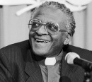

Güney Afrika apartheid rejiminin önde gelen bir karşıtı olan başpiskopos Desmond Tutu (1931–) 1970 ve 1980’lerde ırkçı hükümete karşı geliştirdiği şiddet içermeyen protesto eylemleri ile büyük ün kazandı. Güney Afrika, 1990 yılında onun çabalarının da katkısıyla Apartheid’a son verdi. 1994 yılında ülkenin ilk demokratik ve çoğulcu seçimleri yapıldı.

Bir Anglikan rahibi olan Tutu, Apartheid karşıtı mücadelenin önde gelen figürlerinden biri ve dünya çapında bir insan hakları savunucusu olmuştur. 1984 yılında Nobel Barış Ödülü aldı. Güney Afrika Hakikat ve Uzlaştırma Komisyonu’na başkanlık yaptı. Afrika ve dünya politikasında etklili bir şahsiyet olmaya devam etmektedir.
Güney Afrika’daki Transvaal’de bir işçi ailesinin çocuğu olarak dünyaya geldi. 1960 yılında papaz olmadan önce lise öğretmenliği yaptı. Bu dönemde ülkedeki yasalar siyahilerin pek çok meslek dalında çalışmasını engelliyordu. Rahip olduktan sonra bir süre İngiltere’de kaldı. 1967 yılında geri döndü.
Büyük ölçüde beyaz bir cemaati olan siyahi bir rahip olarak Apartheid karşıtı mücadelede önemli bir yere sahipti. Diğer Apartheid karşıtı liderlerden, örneğin Nelson Mandela’dan (1918–) farklı olarak Tutu asla cezaevinde yatmadı. Şiddeti desteklemedi. Bunun yerine uluslararası kamuoyunu Güney Afrika’ya yatırım yapmamaya çağırdı. Bu strateji Apartheid hükümeti üzerinde büyük bir ekonomik baskı yaratacaktı.
Tutu 1976 yılında Lesotho piskoposu ve 1986 yılında Cape Town başpiskoposu oldu. Güney Afrika Anglikan Kilisesi’ni yöneten ilk siyahiydi.
1990 yılında Apartheid kaldırılınca Hakikat ve Uzlaştırma Komisyonu’nun on yedi üyesine başkanlık etmekle görevlendirildi. Komisyon, Apartheid döneminde yaşanan insan hakları ihlallerini araştırdı. 1996 yılında başpiskoposluktan emekli oldu. Kanser teşhisi konulunca Güney Afrika’dan ayrıldı. ABD’de başarılı bir tedavi gördü. 2000 yılında Desmond Tutu Barış Vakfı’nı kurdu. Toplumsal adalet arayışı içersinde olan marjinal halkların sesi oldu.
Ek Bilgiler
1- Amerikan dış politikasını eleştiren Tutu, 2004 yılında New York’taki bir oyunda rol aldı. Oyunun adı “Guantánamo: Honor Bound to Defend Freedom” (Guantanamo: Özgürlüğü Savunmayı Onur Meselesi Edinenler) idi. Terör şüphelilerinin konulduğu Guantanamo Körfezi’ndeki Amerikan hapishanesinin meşruiyetini sorgulayan bir yargıcı oynuyordu.
2- Tutu farklı ırklardan oluşan Güney Afrika halkı için “gökkuşağı ulusu” tabirini kullanmıştır. Güney Afrikalılarsa Tutu’ya İngilizce’de başpiskopos anlamına gelen archbishop kelimesinin ilk kısmı olan “Arch” lakabını takmıştır. Resmi unvanı ise “Cape Town Emekli Başpiskoposu”dur.
3- Tutu çeşitli akademik görevlerde bulunmuştur. ABD’nin Atlanta şehrindeki Emory Üniversitesi’nde misafir profesör ve Güney Afrika’nın Bellville kentindeki Western Cape Üniversitesi’nde şansölye idi.